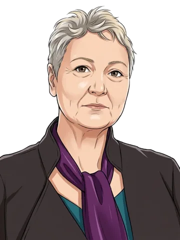

Pakket Belastingplan 2027 › 10 november 2026
Kamer laat minister eerst over box 3 antwoorden, daarna Belastingplan
Waar ging dit deel over
Dit ordedebat ging over de volgorde van de debatten, niet over de inhoud van de belastingplannen. Volgens meerdere sprekers was een dag eerder in het wetgevingsoverleg een apart box 3-debat met de minister afgesproken. Via een e-mailprocedure van de commissie voor Financiën is dat op de dag van dit debat teruggedraaid, wat veel partijen afkeuren. Een meerderheid steunt het voorstel van ChristenUnie: eerst spreekt de minister van Financiën in tweede termijn over box 3. Daarna gaat de behandeling van het Belastingplan 2027 verder.
Hoe liep het debat af
De moties horen bij het hele debat, niet bij één deel.
Over het wetsvoorstel zelf: uitslag niet in onze gegevens.
Moties uit dit debat: 12 moties (verzoeken aan de regering). Uitslag: 7 aangenomen en 5 verworpen.
Over het wetsvoorstel en de amendementen stemt de Kamer apart; na de Tweede Kamer stemt de Eerste Kamer.
Een aangenomen motie is een verzoek aan de regering, geen wet of besluit. De regering beslist zelf óf en hoe ze het uitvoert.
Wat de sprekers zeiden
Per spreker, in de volgorde waarin ze spraken, met het aantal zetels van de fractie en of die in de coalitie zit.

Luc Stultiens PRO · 20 zetels · oppositie
PRO vindt het vrij oncollegiaal dat het besluit van de dag ervoor via een e-mailprocedure is teruggedraaid. De partij steunt het voorstel van ChristenUnie en wil genoeg tijd voor box 3 en het budgettaire gat van 7,5 miljard.
Milan Schenk FVD · 7 zetels · oppositie
FVD noemt de gang van zaken volstrekt ontoelaatbaar en bijzonder oncollegiaal. Volgens FVD was dit een verzoek van de VVD en is het een schoffering van een heel groot deel van de Kamer.

Doğukan Ergin DENK · 3 zetels · oppositie
DENK vindt het onacceptabel dat debatten met procedurele spelletjes op één hoop worden gegooid. Volgens DENK is er een nieuwe politieke situatie. DENK wil dat de minister daar eerst op ingaat, en wil het WGO in een apart debat afhandelen.
Pieter Grinwis ChristenUnie · 3 zetels · oppositie
ChristenUnie zegt dat de procedure volgens de regels kan zijn gegaan, maar niet klopt, en noemt het heel onhygiënisch. De partij wil de minister alle kans geven om eerst de vragen uit het WGO te beantwoorden.
Henk Vermeer BBB · 3 zetels · oppositie
BBB vindt het niet sportief om via een andere route terug te komen op een besluit uit het wetgevingsoverleg. Nu het zo is, wil BBB eerst het wetgevingsoverleg afronden.

Corrie van Brenk 50PLUS · 2 zetels · oppositie
50PLUS steunt het voorstel van ChristenUnie. De partij vindt dat een minderheidskabinet rekening moet houden met anderen, en dat de oppositie opnieuw wordt weggezet.

Michiel Hoogeveen JA21 · 9 zetels · oppositie
JA21 vindt het prima om eerst het wetgevingsoverleg af te ronden.
Christine Teunissen PvdD · 3 zetels · oppositie
PvdD steunt het voorstel van ChristenUnie, maar vindt dat het debat er met stoom en kokend water doorheen wordt gejaagd.

Laurens Dassen Volt · 1 zetel · oppositie
Volt vindt het niet fraai, maar wil het wetgevingsoverleg eerst voortzetten.

Elmar Vlottes PVV · 19 zetels · oppositie
PVV spreekt van de ene chaos na de andere, maar steunt het voorstel van ChristenUnie om eerst het wetgevingsoverleg af te ronden.

Jimmy Dijk SP · 3 zetels · oppositie
SP steunt het voorstel van ChristenUnie.

Chris Stoffer SGP · 3 zetels · oppositie
SGP steunt het voorstel van ChristenUnie.

Wendy van Eijk VVD · 22 zetels · coalitie
VVD vindt dat beide onderwerpen een volwaardig debat verdienen en steunt waar de meerderheid voor kiest.

Inge van Dijk CDA · 18 zetels · coalitie
CDA steunt het voorstel van ChristenUnie en gaat ervan uit dat alle tijd wordt genomen voor de beantwoording.

Henk-Jan Oosterhuis D66 · 26 zetels · coalitie
D66 vindt het prima om het op deze manier te doen.
Alle delen van dit debat
- 1.Kamer laat minister eerst over box 3 antwoorden, daarna BelastingplanOrdedebat · 16.31 uur
- 2.Antwoord van het kabinet: EerenbergAntwoord van het kabinet · 18.46 uur · geen samenvatting, wel het verslag
- 3.Antwoord van het kabinet: HeinenAntwoord van het kabinet · 19.38 uur · geen samenvatting, wel het verslag
- 4.Tweede termijn van de Kamer: Stultiens, Oosterhuis, Vlottes, Van Eijk en 6 anderenTweede termijn van de Kamer · 19.58 uur · geen samenvatting, wel het verslag
- 5.Tweede termijn van de Kamer: Grinwis, Jimmy Dijk, Vermeer, Van Brenk en 2 anderenTweede termijn van de Kamer · 21.00 uur · geen samenvatting, wel het verslag
- 6.Antwoord in tweede termijn: EerenbergAntwoord in tweede termijn · 22.10 uur · geen samenvatting, wel het verslag